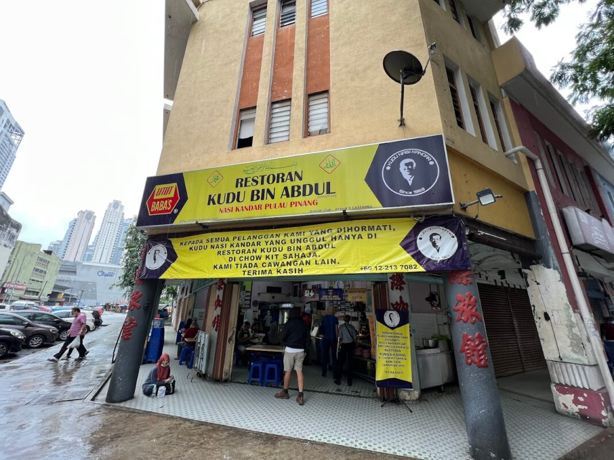

1. Zainul Nasi Kandar
ditulis oleh: Renanta 2024

Tucked away in the corner of a humble food court in Petaling Jaya sits Zainul Nasi Kandar, one of the area’s most popular nasi kandar spots. During lunch, you’ll see many customers eagerly waiting in line while others are looking for a place to sit in front of the stall. The bright yellow signs are a familiar sight to many, as they continuously draw loyal customers back over and over again.
Like most nasi kandar places, Zainul Nasi Kandar doesn’t offer sets with fixed side dishes. Instead, you get to choose exactly what you want to be included on your plate. Of course, you have to start with kuah campur, no ifs, no buts.
2. Restoran Kudu bin Abdul
Restoran Kudu bin Abdul is a family-run business that started off as a simple kopitiam back in the 60s. Even after decades of operation, you’ll find long lines of hungry customers that seep out of the confinements of the store during lunch hours. Despite their clear success, they remain humble, as seen in the restaurant’s interior that hasn’t changed much since its inception.
A serving of plain Nasi Putih here is RM2, which is the standard price for KL. If you’ve managed to power through the queue, be sure to order their specialty dish— Ayam Bawang Kicap (RM7). Other chicken dishes served here include Ayam Goreng, Ayam Kari, and Ayam Madu (RM7 each).